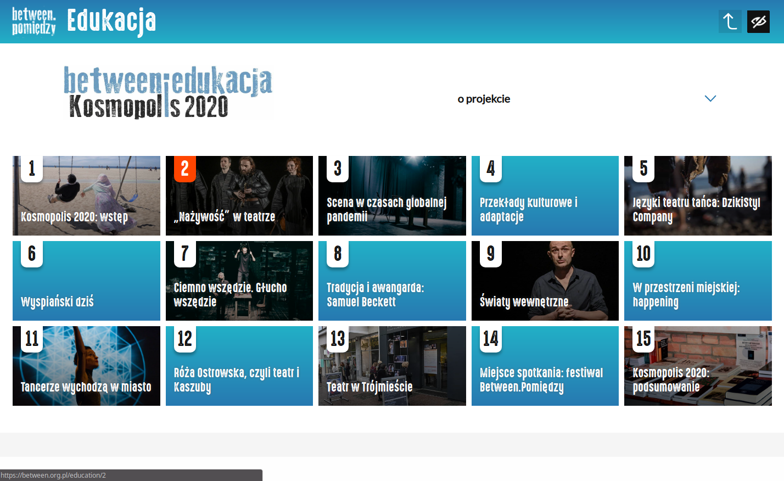
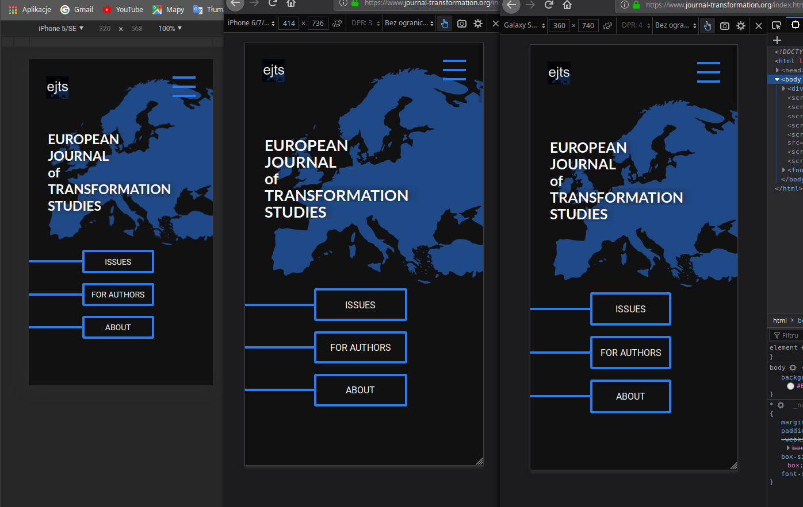
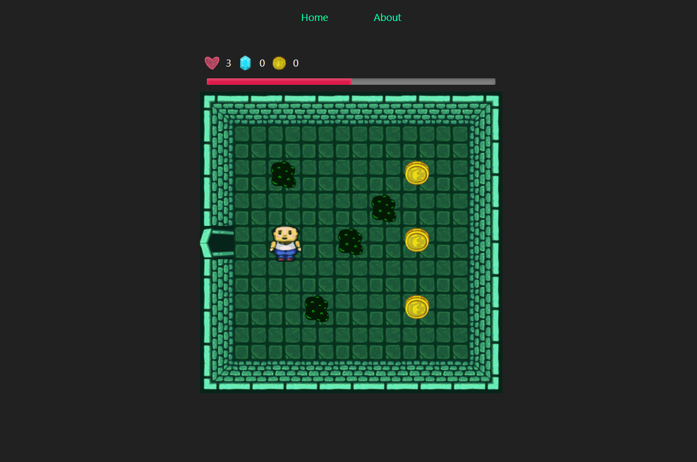

<div class="dialog">
  <div class="dialog-content-wrapper">
    <div class="dialog-header">
      <h2>About the Project and the Author</h2><button (click)="closeDialog()">&#x2715;</button>
    </div>
      <div class="dialog-main">
        <p>Hi, my name is <strong>Paweł Nieczuja-Ostrowski</strong>. I'am a front-end developer, a member of the HackerSpace Tricity community. In my work I focus especially on the issues of digital accessibility and creating a friendly layout.</p>
        <p>The <strong>CountriesBook</strong> project was made in 2023, July using Angular 16, TypeScript and SCSS. It uses open source API data from
          <a class="go-back-link" href="https://restcountries.com/" title="Go to the website" target="_blank">restcountries.com</a> and open source icons from
          <a class="go-back-link" href="https://www.svgrepo.com/" title="Go to the website" target="_blank">svgrepo.com</a>. The author of the background image is
          <a href="https://pl.freepik.com/darmowe-wektory/niebieska-akwarela-mapa-swiata_20157123.htm#query=wolrdmap%20turquise&position=7&from_view=search&track=ais">Vectonauta</a> from Freepik.
        </p>
        <p>More information about me you can find on my
          <a class="go-back-link" href="https://pawelnieczuja.com/" title="Go to the website" target="_blank">personal website</a>
          or on <a class="go-back-link" href="https://www.linkedin.com/in/pawe%C5%82-nieczuja-ostrowski-6b084a88/" title="Go to the website" target="_blank">LinkedIn</a>.</p>
        <div>
          
          
          
        </div>
      </div>
  </div>
</div>
